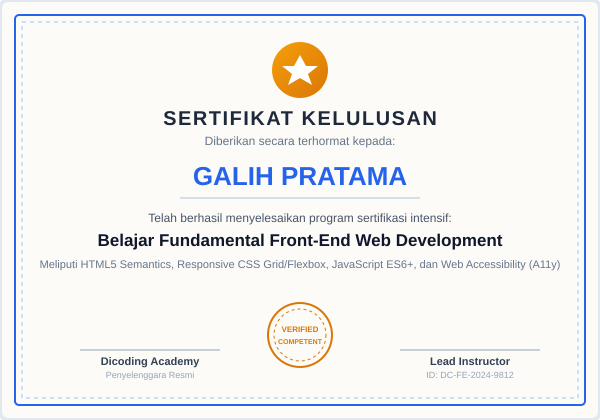

Validasi Kompetensi
Sertifikat Pelatihan & Lisensi
Bukti sertifikasi resmi dari lembaga pelatihan kredibel yang memvalidasi komitmen saya dalam terus mengasah kapabilitas teknis secara berkelanjutan.

Dicoding Indonesia
Nov 2024
Belajar Fundamental Front-End Web Development
Menguasai HTML5 Semantics, Flexbox/Grid CSS modern, JavaScript ES6+, Web Component, dan integrasi REST API.

Google & Coursera
Okt 2024
Google Data Analytics Professional Certificate
Program spesialisasi 8 kursus mengenai pembersihan data, kalkulasi SQL, visualisasi Tableau, dan etika data.

Binar Academy / BWA
Agu 2024
UI/UX Product Design & Prototyping Specialist
120+ jam pelatihan mencakup riset kualitatif, user persona, Figma interactive component, dan usability testing.

PMI Authorized
Jun 2024
Agile & Scrum Project Management Fundamentals
Pemahaman metodologi Scrum, sprint planning, manajemen backlog Jira, dan strategi mitigasi risiko projek digital.